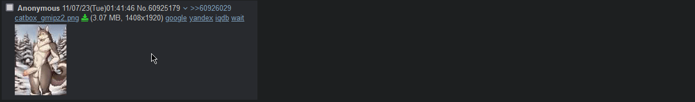

What would really help you in the start, when you want to generate furry images with AI?
First off, having the specs to run Stable Diffusion. The most important part is the graphics card. I would recommend a MODERN card, with either 6 or 8 VRAM for the "low end", 8 VRAM is enough, you dont need more unless youre very picky and want instant 1 second wait times for images.
Another important thing is: Knowing e621 tags, but im sure no furry would struggle with that since all of them are porn addicts.
When you are using AI, you can't just be vague with your prompt and expect something good to pop out, you need to know exactly what you want and need. become a perfectionist, there is seemingly no limit to what you can generate, except for your imagination.
After having met all the requirements, you are ready to start generating your fantasy furry porn to satisfy your homosexual needs!
How to install
I will assume that you are on Windows and you are using an Nvidia card, so follow this tutorial only if you use those
Install Stable diffusion by right clicking on a folder in which you want to install it, then pressing "Open Git Bash here", after which a terminal will open, write in the terminal "git clone https://github.com/AUTOMATIC1111/stable-diffusion-webui.git"
After that, you are technically done, but there are some optimizations and settings that you will most likely need for furry AI generation
Setup and Optimizations
Go to your stable diffusion folder, scroll down until you find "webui-user.bat" once you open it, go to the 6th line Where it asks for Commandline Arguements, there you should write "--autolaunch --xformers". xformers makes images generate faster. Then go to the 3rd line where it asks for the path of Python, find where python is installed on your pc and paste the location here, it should look like this "C:\Users\****\AppData\Local\Programs\Python\Python310\python.exe"
It should look something like this:
You will need models, such as:
(Most of the time have 2 files that need to be put in your Models/Stable-diffusion folder)Yiffymix
EasyFluff (Apparently this is the best one in terms of results)
FluffyRock
I highly recommend, when first starting out, you take a look at a model's civitai comments or posts, especially if you are struggling to make any images. (Most posts also share the prompts that are used)
You will need loras
(1 file that needs to be put in your Models/Lora folder)Fluffyrock Quality tags
Detail Tweaker Lora
You will need Embeddings
(1 file that needs to be put in your /Embeddings folder)Boring E621 Negative embedding
Using 4chan and catbox
If you want an alternative to CivitAI, you can use 4Chan. 4Chan's /Trash/ board has regular stable diffusion posts in which you can view the tags, models and loras that they have used.
(Only if they have uploaded their image to catbox)You are going to need 3 things, a userscript manager such as Violentmonkey, a 4chan plugin called 4ChanX and catboxanon , the userscript that adds onto the 4chan plugin to allow you to view the metadata of ai generated images, allowing you to see all of the information.
After doing all of that, you should be able to go on a 4chan board, try to make a post and when youre making a post, you should have a "catbox" button near the "files" button click that and upload your AI generated masterpiece. If you want to see someone elses tags, you have to scroll through the posts until you see a GREEN download button, then you will right click it and the tags will appear like so:

My Results so far